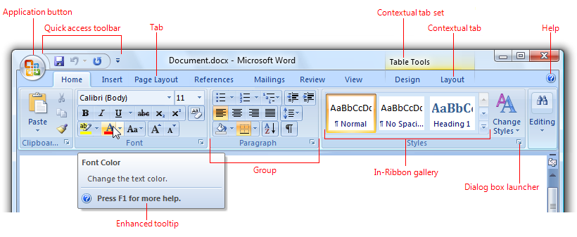
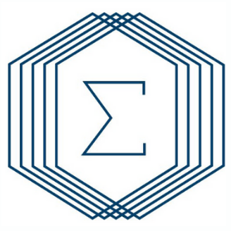
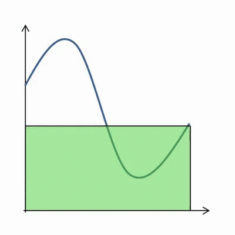

[1] 4Quarto as a powerful tool to teach mathematics
Anna Szczepańska-Álvarez
Poznań University of Life Sciences, Poznań, Poland.
Adolfo Álvarez
O-I Business Service Center, Poznań, Poland.
Introduction
Creating teaching materials for mathematics can be a challenge
What do mathematics lecturers need from a tool to create material?
- Support for equations
- Elegant typesetting
- Use the same tool for producing slides or articles
96.9% of mathematical papers were written in LaTeX in 2009.1
LaTex is a very powerful and flexible tool that covers those needs, but at a cost:
- Printer oriented. (Static documents)
- Steep learning curve
- Complex tag system.
Software for academic writing
- Most of us started with word processors (Ms Word, Libreoffice,… )
- Formatted text
- LaTeX is the standard in academia
- Plain text with markup tagging (i.e.
\textbf{Bold text})
- Plain text with markup tagging (i.e.
- Markdown
- Plain text with lightweight markup tagging (i.e.
**text**)
- Plain text with lightweight markup tagging (i.e.
- Markdown flavours
- i.e. Pandoc for extended features such as tables, figures, quotes
A Markdown-formatted document should be publishable as-is, as plain text, without looking like it’s been marked up with tags or formatting instructions. – John Gruber

What is Quarto
Quarto is an authoring tool that:
- Support for equations
- Elegant typesetting
- Use the same tool for producing slides or articles
and…
- Uses a simpler markup tag language (Pandoc),
- Expand the possible outputs not only to PDF but also HTML, Powerpoint, Word, or other formats.
- Integration with programming languages such as R, Python, or Julia.
- Calculations and plots can be automatically generated inside the slides or documents, reducing errors and increasing reproducibility.
- Accesible via your favorite text editor or Jupyter notebooks.
Starting with Quarto
Composing the document
- As in LaTeX, you can create a Quarto file (.qmd) in any text editor.
- But there are editors which are nicely integrated with Quarto: RStudio, VSCode, and Jupyter notebooks.
- In this text file you write your document using the Pandoc notation.
- At the beginning of the document we have to specify some basic information.
Possible outputs:
- Documents:
- HTML, PDF, Word, OpenOffice, ePub.
- Presentations:
- Revealjs, PowerPoint, Beamer.
Pandoc notation
You can use inline format for text:
- Italic with
_text_or*text*: Italic text - Bold with
**text**: Bold text - Hyperlinks with
[text](link), e.g., XX OKNMUT. - Images with

.
Pandoc notation
- Section headers can be written after a number of pound signs, e.g.,
In slide mode # will open a new slide separator, ## a new slide, and ### a subtitle
Lists
Unordered list items start with *, -, or +, and you can nest one list within another list by indenting the sub-list, e.g.,
The output is:
- one item
- one item
- one item
- one more item
- one more item
- one more item
Lists
Ordered list items start with numbers (you can also nest lists within lists), e.g.,
The output does not look too much different with the Pandoc source:
- the first item
- the second item
- the third item
- one unordered item
- one unordered item
Quotes
Blockquotes are written after >, e.g.,
> "I thoroughly disapprove of duels. If a man should challenge me,
> I would take him kindly and forgivingly by the hand
> and lead him to a quiet place and kill him."
>
> --- Mark Twain“I thoroughly disapprove of duels. If a man should challenge me, I would take him kindly and forgivingly by the hand and lead him to a quiet place and kill him.”
— Mark Twain
Columns
We can arrange content into columns of varying widths:
::: columns
::: {.column width="35%"}
This is column 1
:::
::: {.column width="3%"}
:::
::: {.column width="62%"}
This is column 2
:::
:::This is column 1
This is column 2
Formulas
- Equations can be written using LaTeX notation
- Inline equations should be enclosed into dollar signs:
- You write
$\int_{1}^{x}(2-u^2)du$ - You get \(\int_{1}^{x}(2-u^2)du\)
- You write
- Display style should be enclosed into double dollar signs:
- You write
$$\int_{1}^{x}(2-u^2)du$$ - You get \[\int_{1}^{x}(2-u^2)du\]
- You write
Example
---
title: "Exam logic and set theory"
author: "Anna Szczepańska-Álvarez"
format: pdf
---
1. Determine which of the following formulae are tautologies, which are contradictory and which are satisfiable
(a) $\neg ((p \wedge \neg p) \to q)$
(b) $\neg p \wedge \neg (p \to q)$
(c) $((p \to q) \to p) \to p$
(d) $(p \lor \neg q) \to \neg (q \wedge \neg p)$
2. The following statements about sets are false. Give a counterexample to each statement
(a) $A \cup B = A \cup C \to B = C$
(b) $A \subseteq B \cup C \to A \subseteq B \lor A \subseteq C$
3. Check if the following inference rules are valid.
(a) $\dfrac{p \to q,\ \neg q \lor r,\ \neg r}{\neg p}$
(b) $\dfrac{p \to q,\ p \lor \neg r,\ \neg r}{\neg q \lor r}$
(c) $\dfrac{\neg p \to \neg q,\ q,\ \neg (p \wedge \neg r)}{r}$
(d) $\dfrac{((p \wedge q) \to r),\ \neg (p \to r)}{q \to r}$
4. Find the truth set of each of these predicates where the domain is the set of integers.
(a) $P(x): x^2 < 3$
(b) $Q(x): x^2 > x$
(c) $R(x): 2x + 1 = 0$
(d) $P(x): x^3 \ge 1$Using executable code
- One of the main advantages of using Quarto is to be able to execute code and see the output in our document.
- We have text, equations, data, formulas, plots, in the same document. No need to copy paste! Reducing errors and improving reproducibility.
- Main supported languages: Python, R, Julia, Observable.
- But also many other languages: C++, Fortran, Perl, Ruby, Bash, SQL, etc.
So we write:
And we get:
Advantages of HTML presentations (revealjs)
Tabsets
You can include tabsets with:
For example:
What is the inverse matrix of
\[ A = \begin{pmatrix}0&-1&-2 \\-3&1&0 \\-1&-2&2 \\\end{pmatrix} \]
\[ A^{-1} = \begin{pmatrix}-0.1&-0.3&-0.1 \\-0.3&0.1&-0.3 \\-0.35&-0.05&0.15 \\\end{pmatrix} \]
```{r, echo = FALSE}
write_matex2 <- function(x) {
begin <- "\\begin{pmatrix}"
end <- "\\end{pmatrix}"
X <-
apply(x, 1, function(x) {
paste(
paste(x, collapse = "&"),
"\\\\"
)
})
paste(c(begin, X, end), collapse = "")
}
A = matrix(c(0,-1,-2,-3,1,0,-1,-2,2), nrow = 3, byrow = T)
```
A = r write_matex2(A)
A^{-1} = r write_matex2(solve(A))Animated gifs
You write:
and you get:
Interactive plots
Include applications
Turn presentations into applications with Observable and Shiny.
Themes
10 Built-in Themes (or create your own)


Easy Navigation
Quickly jump to other parts of your presentation

Toggle the slide menu with the menu button (bottom left of slide) to go to other slides and access presentation tools.
You can also press m to toggle the menu open and closed.
Chalkboard
Free form drawing and slide annotations

Use the chalkboard button at the bottom left of the slide to toggle the chalkboard.
Use the notes canvas button at the bottom left of the slide to toggle drawing on top of the current slide.
You can also press b to toggle the chalkboard or c to toggle the notes canvas.
Point of View
Press o to toggle overview mode:

Hold down the Alt key (or Ctrl in Linux) and click on any element to zoom towards it—try it now on this slide.
Speaker View
Press s (or use the presentation menu) to open speaker view
Euler’s number
The number \(e\), also known as Euler’s number, is a mathematical constant approximately equal to 2.71828 that can be characterized in many ways. It is the base of a logarithm of natural logarithms. It is the Limit of a sequence of \((1 + 1/n)^n\) as \(n\) approaches infinity, an expression that arises in the study of compound interest. It can also be calculated as the sum of the infinite Series \[ e = \sum\limits_{n = 0}^{\infty} \frac{1}{n!} = 1 + \frac{1}{1} + \frac{1}{1\cdot 2} + \frac{1}{1\cdot 2\cdot 3} + \cdots \]
Conclusions
Conclusions
- Quarto is an alternative to LaTeX to produce documents and slides for our lectures.
- It expands the possible outputs to several formats
- Considering the use of HTML slides will provide more interactivity to the class.
- Other uses of Quarto we didn’t cover today include journal templates, books, websites, etc.
Get more information and trainings material at: Quarto.org